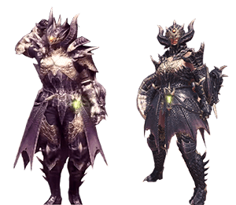
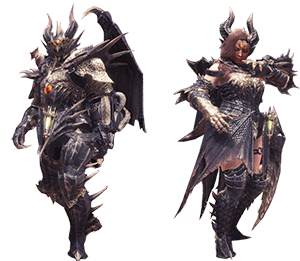
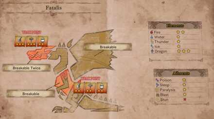

Une légende raconte qu'autrefois, un royaume de la taille d'un continent fut anéanti en une nuit par une créature surpuissante. Hélas, il se trouve que cette légénde...est bel est bien fondée. "Fatalis" est le nom qui fut donné à ce démon. C'est lors du chapitre final de Monster Hunter World: Iceborne, que la guilde se frotte au Fatalis, alors revenu hanter les lieux de son massacre millénaire, les ruines du Château de Schrade.
Arborant des ecailles noires et pourpres, le Fatalis est un dragon ancien ainsi qu'un "Black Dragon". Il était, à sa sortie, le boss final du premier opus de la série Monster Hunter.
Le Fatalis n'est d'ébloqué qu'une fois que tout les autres quetes principales du jeu ont été terminé, notemment celle du controversé Alatréon.
Après s'estre concerté avec la guilde, le chasseur et son équipe se rendent à Castle Shrade, le lieu ou le premier combat contre le Fatalis a eu lieu, il y a 1000 ans. Peu après leur arrivée, le Fatalis se dévoile, et le combat commence.
Le modèle du Fatalis et son theme ont été remaniés pour l'ocasion, le rendant plus menaçant que jamais.
Encore aujourd'hui, le combat contre le Fatalis est le combat le plus dur de Monster Hunter, et ce, de très loin. Les attaques du Fatalis sont dévastatrices et très rapides. Plusieurs fois au court du combat, l'arène se verra transformée en mer de flammes, necessitant de se cacher pour espérer survivre. Il faut avoir une connaissance parfaite du combat et de son déroulement pour espérer venir à bout du Dieu de la mort de Monster Hunter.
|  |  |  |
| Armure Dragon Alpha> | Armure Dragon Beta | Tableau Forces/Faiblesses |